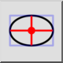
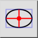
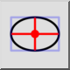
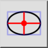

Ellipse with Diameters
Toolbar / Icon:
 

Menu: Draw > Ellipse > Ellipse with Diameters
Shortcut: E, D
Commands: ellipsediameters | ed
Toolbar / Icon:
 

Menu: Draw > Ellipse > Ellipse with Diameters
Shortcut: E, D
Commands: ellipsediameters | ed
Draws ellipses with given major and minor diameter (width / height).